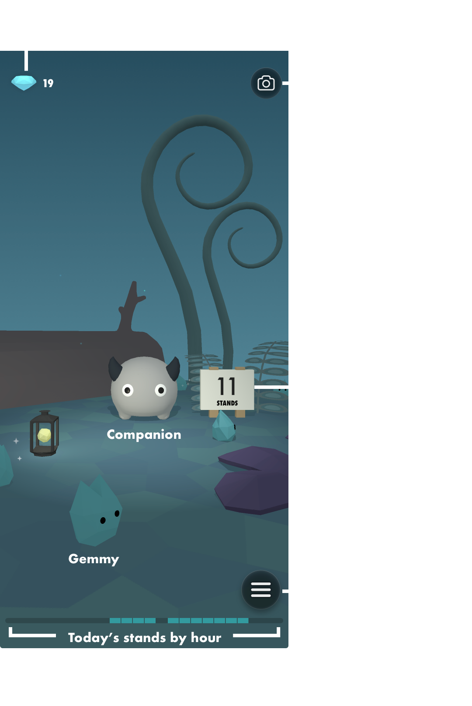
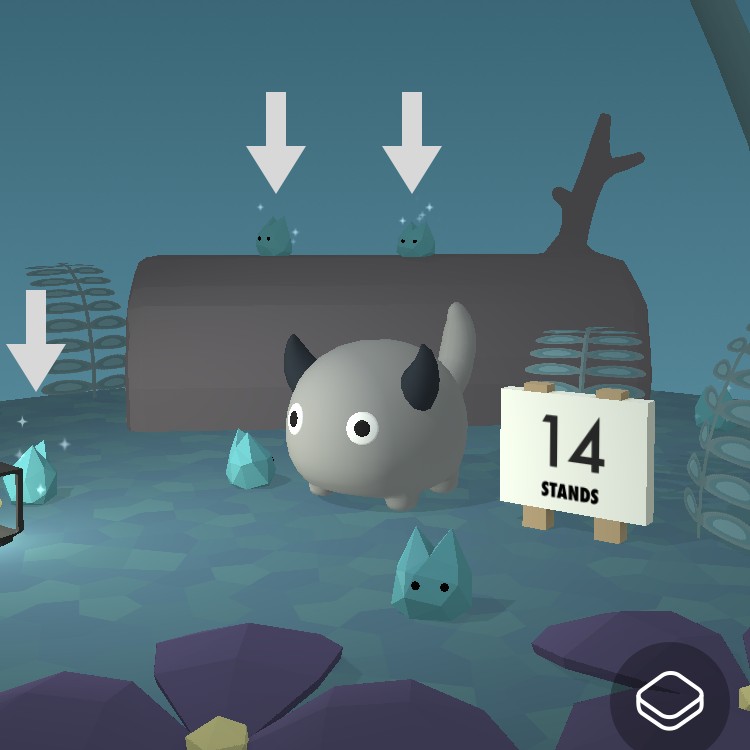
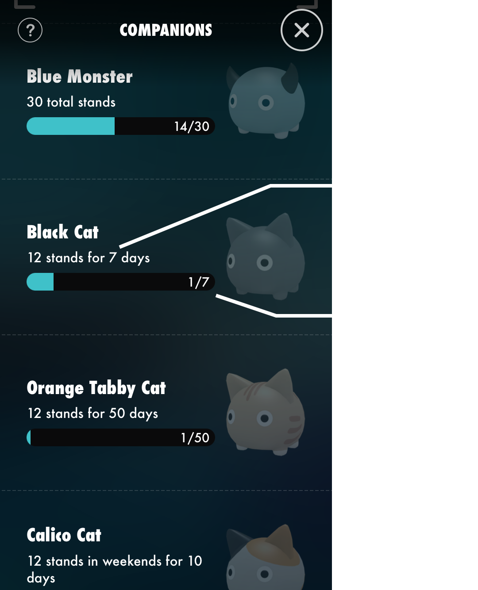
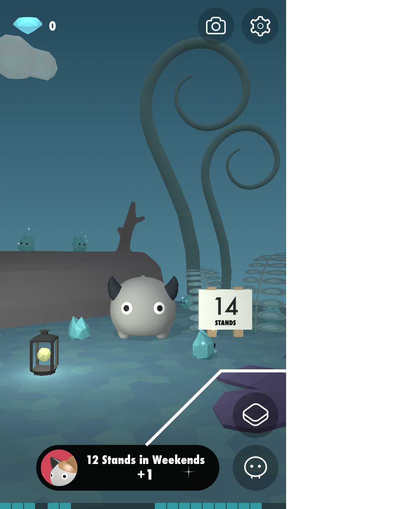

Help
Basics
Moving around more than a minute per hour counts as 1 stand.
Standland reads data from Apple's Health app (HealthKit) for counting stands.
• Stand Hours for Apple Watch users
• Steps for others (Over 80 steps per hour = 1 stand)
Main Screen

Gemmy

Tiny blue stones are Gemmy, the gem monsters. They will appear each time you stand in the day. And they might have shiny 💎 for you! Tap the shiny Gemmy.

Companions
You can get companions by achieving goals!
・Moving around more than a minute per hour counts as 1 stand.
・Maximum stand for a day is 24.
・Counting for goals will be started everyday at midnight.

A small info view appears if there is any progress in achievements.
